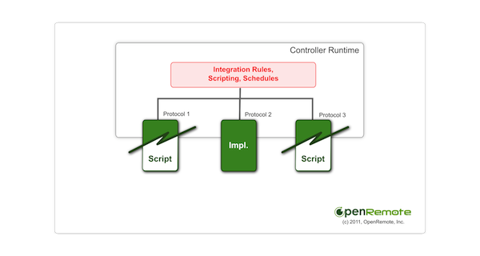

I would like to run some ideas past the OR community for development work I am currently doing, feel free to offer suggestions/ideas that you think might improve things.
Current Situation
A separate connection for each sensor is made to the server referenced in the status command. If you have lots of sensors then very quickly you'll see problems with protocols like telnet where connections fail because lots of servers don't like lots of connections from the same client.
Proposal
The idea is simple; rather than have lots of separate connections being made to each server a connection gateway manager would be responsible for making a single connection to each server, all commands that are sent or read from this server then get routed through the appropriate connection gateway. Each connection gateway will have several parameters that can be tailored for your needs: -
| Parameter | Optional | Description | Possible Values |
|---|---|---|---|
| Protocol | N | The protocol used to communicate with the server | telnet, HTTP, TCP, UDP Unicast, UDP Multicast, UDP Broadcast, HTTP, etc...New protocols can be developed the same way as they can at present but the structure will be different so they all work with a common gateway |
| Protocol Parameters | Y/N | Parameters that are specific to the protocol | This will vary depending on protocol type telnet requires IP, port, optional params would then include prompt string etc. |
| Connection Type | N | Connection policy for the gateway | Permanent=Always connected, Managed=Only connects when there's commands to be sent or sensors need updating, Connectionless=For servers that don't need to manage a connection i.e. HTTP) |
| Polling Method | N | How sensor data is received | Query=Have to ask the server for the status of the sensor, Broadcast=Server sends a message when status changes) |
| Polling Interval | Y | Time to wait between sensor updates | Milliseconds if not supplied a default will be used |
| Connect Timeout | Y | Time to wait for connection attempt | Milliseconds if not supplied a default will be used |
| Send Timeout | Y | Time to wait for send command to complete | Milliseconds if not supplied a default will be used |
| Read Timeout | Y | Time to wait for read command to complete | Milliseconds if not supplied a default will be used |
Development Status
I have got a very early working example of this up and running but more work is needed. Anyone interested in testing the beta code just watch this thread and I'll make a post informing you it's ready for testing. At present I have got things working with the existing controller.xml structure so my Connection Manager looks through all the commands and builds up the unique gateways based on the command protocol and properties. I have only been working with Telnet so far but the idea is that all protocols will be encapsulated into the gateway model.
Command Definitions
By implementing the connection gateways you should see that the protocol is then specific to the gateway where at present the protocol is defined at the command level. This will then allow the command definitions to be simplified and in the composer you would simply attach each command to the corresponding gateway and it would then inherit the settings. Commands become a simple case of read or send.
Command Improvements
Rather than commands be a rigid read or send I would like more flexibility and I'd be interested in knowing others opinions on this. My proposal is to make each command a sequence of pre-defined operations, for example if I want to get some information from a Music Player Daemon telnet server about the song that's currently playing but I want to display this information in a label component in my panel in a certain format (e.g. ARTIST NAME - TITLE), the telnet server doesn't provide a command to send this information as I want it but instead offers two seperate commands, current-artist and current-title (this isn't true in the case of MPD but is just for example purposes). Such functionality is very difficult in the current setup and you may need to write your own version of the telnet protocol to do the work for you. So instead imagine the command as a sequence of actions defined in XML something like this:
<command id="1" gateway="1"> <action seq="1" type="read" value="current-artist" params=""/> <action seq="2" type="filter" value="^.*artist:(.*)$" params="input=$s1"/> <action seq="3" type="read" value="current-title" params=""/> <action seq="4" type="filter" value="^.*title:(.*)$" params="input=$s3"/> <action seq="5" type="combine" value="$s2.match(1) - $s3.match(1)"/> </command>
To explain:
action #1: Read data from server by sending the current-artist command
action #2: Filter the response from action #1 using the regex ^.artist .)$
.)$
action #3: Read data from server by sending the current-title command
action #4: Filter the response from action #3 using the regex ^.title .)$
.)$
action #5: Combine the values of multiple actions in this case the result from
Using this approach very powerful functionality could be achieved using the standard telnet protocol which would avoid the need for writing custom implementations.
Look forward to hearing everyone's thoughts on this.
Rich
{kind=link}
|
On Command improvements, this is a no-go on the current dev branch due to the XML schema changes it would require (and therefore tooling implementation changes). What you are essentially getting at is scripting of the protocol, which by and large is not best achieved with XML elements and regexp is not the most accessible method of going about it (although I would not exclude use of regexp per se). To expand the above somewhat, the XML tends to break down as soon as your message exchange on the protocol would include conditionals (if response - then action), or even repeats. The regexp is somewhat difficult for your average user still to grasp where as scripting gives us multiple levels of difficulty/functionality with various choices up to something very domain specific and potentially a lot simpler than regexp for an installer to deal with (who are likely going to need something simpler than regexp to be able to provide more integration templates by themselves). Your proposal on command improvement part reads to me as a intermediate step which would add flexibility but given the XML schema changes and the fact that we'd still need to go to full scripting later (given the reasoning above), I'd skip this step and move to full protocol scripting directly which already is an identified need. I was just looking into it today with a reimplementation of the HTTP protocol. To get this to work with the current Command <property> elements means either embedding a script as property value, or referencing to a script file from within the property value. <command...> <property name = "script" value = "myMsgExchange.script"/> </command> Script language itself could be something provided by the various Scripting SPIs that are available. The bindings to the script (equivalents of $s1, $s2, $s3 in your example) is something that would still need to be looked at. Anything that requires an XML schema change at this point would need to go to its own branch of "to be dealt with later" while the current iteration is being completed. Prototyping towards scripting on the generic IP protocols is something I'd see as a more interesting option at the moment. |
|
I agree an in-built scripting engine would be a much more flexible solution in the long run but as you've pointed out there are quite a few decisions to be made as to how this is implemented/managed. We have the standard data process of: SEND DATA -> ACKNOWLEDGE SEND READ COMMAND (READ OFTEN REQUIRES A SEND COMMAND TO REQUEST DATA; UNLESS SERVER BROADCASTS) -> PROCESS DATA -> RETURN RESULT The scripting comes into play for 'PROCESS DATA' step as well as building dynamic SEND data packets. In my example earlier (and I have a need for doing lots of this) it is necessary to collate and format data from multiple read commands so it seems that there's a need for the scripting to sit outside the commands at a higher level. The panel components then bind to the scripting objects. This scripting disassociation makes sense to me as you could then have devices available in beehive that users just drag in and all the commands that each device supports will already then be defined. The scripting would then come into play for formatting and logic processing based on the particular application needs. Would Jython be a good way to go in your opinion. In theory if we're focussing on IP networks then the list of protocols should become pretty static depending on how advanced or specific the protocols become. One extreme is that we literally stop at the transport layer with TCP, UDP unicast, UDP multicast and UDP broadcast protocols. Or as we have at the moment we go to the application layer and let the application layer API deal with confirming that the send or read command was successful. This very topic has posed challenges while I've been developing the gateway object model as I have tried to use a generic gateway with the protocol as a property of the gateway so the interface the protocol implements has to be pretty well defined but also work for all variations, obviously the more application specific the protocol becomes the more difficult this is to achieve. |
|
Hello Richard, Your observations are spot on. Here's how I'm currently structuring what you describe: I think it makes sense to separate scripting into two different areas (and distinct use cases). I call one of them protocol scripting which you describe as scripting for the DATA PROCESSING phase. The other case I call integration scripting / rules which you describe as creating dynamic SEND requests. These work at different levels in the system – integration rules outside the commands / protocol implementations and protocol scripting within protocol implementations. Integration rules / scripting works based on events created by protocol implementations – it can be used to create responses to events and it can be used to integrate devices using different protocols into coordinated actions and commands. A typical use case could be a HTPC software starts playing a movie which generates a state update that we poll over HTTP protocol and that leads to a KNX command SEND action on KNX-wired lighting. Or 1-wire sensor status changes leads to commands sent over Telnet controller devices, and so on. Protocol scripting works as part of a single protocol implementation, or across protocol implementations that use generic IP transports and lack dedicated application level automation protocol – and therefore need to be implemented per device model usually. You are right that this is a limited set of protocols, probably Telnet, TCP, UDP, HTTP for the time being. We can use the protocol scripting here for the data processing and (optionally) implementing message exchanges within a single protocol (the latter could also be delegated to the integration rules and scripting, and I don't currently have preference where this logic is executed other than if it complicates the implementation inside protocol implementation then best to leave it to layers outside of them). Dedicated automation protocol implementations (KNX, X10, etc) tend not to need the protocol level scripting since the necessary message exchanges and data formats are usually well defined with device profiles, etc. We are already working on the integration rules part of the system and this should show up in the coming weeks and months. This will work on the internal state cache level which will provide a mechanism for event consumers and producers to listen and create new events / commands (Event API not yet specified in anyway, as you've seen we return string representations of data only so far). What is not currently being worked on are the protocol scripting use cases. The work here could focus on a particular protocol first (such as Telnet) to scratch your immediate itch, or more generically the generic IP based protocols that lack application protocol level automation specifics. This would be inside the command definition, in a manner shown in the earlier posts and XML snippets. 
I'm ok with Jython on the first cut if that's your fancy. Ideally supporting JSR-223 (http://java.sun.com/developer/technicalArticles/J2SE/Desktop/scripting/) or something similar would seem ideal so different scripting languages can be plugged in giving users/installers a choice to use languages they're most familiar with.
This is also a possibility and we may end there long term – though reimplementing specific protocols like KNX on the scripting may not be top priority when we can pull protocol library implementations in directly with Java. But there's a use case here for full protocol scripting directly over IP transport, for example in some of the serverless panel scenarios. |